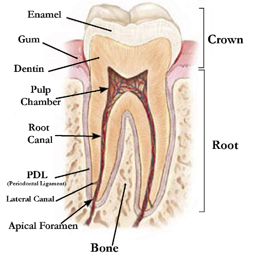
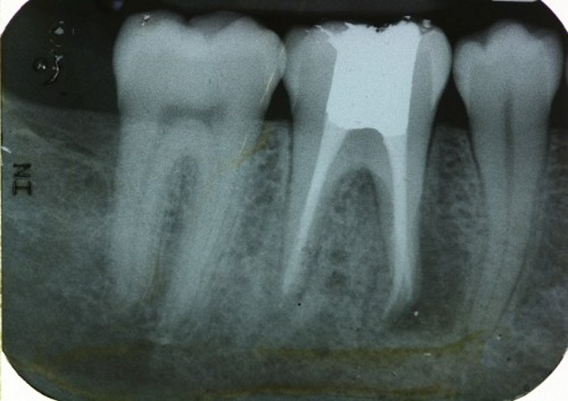

			<div id="carousel-example-generic" class="carousel slide">
				<!-- Indicators -->
				<ol class="carousel-indicators">
					<li data-target="#carousel-example-generic" data-slide-to="0"
						class="active"></li>
					<li data-target="#carousel-example-generic" data-slide-to="1"></li>
					<li data-target="#carousel-example-generic" data-slide-to="2"></li>
				</ol>

				<!-- Wrapper for slides -->
				<div class="carousel-inner">
					<div class="item active">
						
					</div>
						<div class="item">
						
					</div>
						<div class="item">
						
					</div>
					...
				</div>

				<!-- Controls -->
				<a class="left carousel-control" href="carousel-example-generic"
					data-slide="prev"> <span class="icon-prev"></span>
				</a> <a class="right carousel-control" href="carousel-example-generic"
					data-slide="next"> <span class="icon-next"></span>
				</a>
			</div>

		</div>


		<!-- Main content Ends-->

